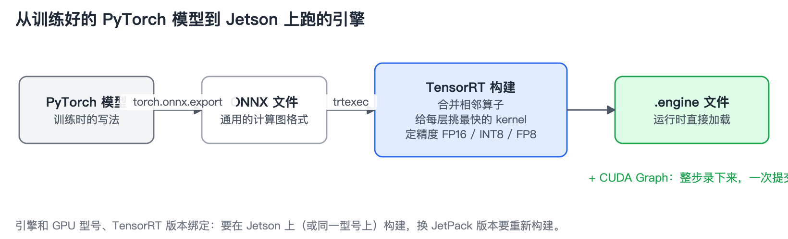
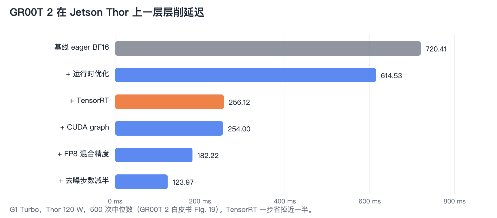
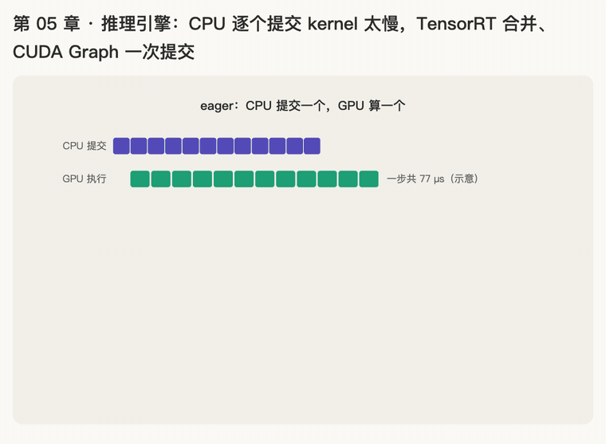

第 5 章 · 推理引擎：从 PyTorch 到 TensorRT，再到 CUDA Graph
本地运行
git clone https://github.com/wikieden/robot-edge-inference
cd robot-edge-inference/code/notebooks
pip install jupyterlab torch numpy
jupyter lab ch05_inference_engines.ipynb也可以下载后直接用 VS Code 打开 .ipynb 运行。需要 GPU 的章节在 Colab 里选「代码执行程序 → 更改运行时类型 → GPU」。
本章回答：训练时写的 PyTorch 模型，直接拿到 Jetson 上跑为什么慢？TensorRT、CUDA Graph 各解决了什么？GR00T 2 在 Thor 上从 720 ms 削到 124 ms，每一步省了多少？
编写日期：2026-11-26 · 上一章：第 4 章 量化 · 下一章：第 6 章 实时调度
对应原文：GR00T 2 白皮书 Fig. 19 / Tab. 27（gr00t2/materials/text/gr00t2-whitepaper.txt§4.6 L1414–L1520，讲义整理在 gr00t2 第 10 章）；《深入理解 AI Infra》§5.5.2ai-infra/materials/ai-infra-book/manuscripts/05-算子与运行时.mdL796–L812（CUDA Graph）；JetPack 6.2 博客的 DLA 算力（附录 · 材料来源）
本章缩写：TensorRT = NVIDIA 的推理优化引擎（Tensor 张量 / RT = RunTime 运行时）· ONNX = Open Neural Network Exchange（开放 / 神经网络 / 交换格式）· CUDA = Compute Unified Device Architecture（计算 / 统一 / 设备 / 架构）· kernel = 在 GPU 上跑的一个小程序 · launch = 提交一次 kernel · eager = 即时执行（PyTorch 默认，一行代码算一次）· DLA = Deep Learning Accelerator（深度学习 / 加速器）· µs = microsecond（微秒，千分之一毫秒）· TensorRT-LLM / TensorRT Edge-LLM = NVIDIA 面向大语言模型的推理库（后者面向端侧）· MLC = Machine Learning Compilation（机器学习 / 编译，一个开源推理框架）。全部缩写见附录 · 缩写与术语表
讲解
第一步：PyTorch 默认是一行一行算的（2026-11-26）
类比：一件件下单 vs 一次下整单。 eager 模式像去超市每拿一件东西就去收银台结一次账：东西本身拿得很快，排队结账的时间却加起来很长。CPU 每算一个小步骤（一个 kernel），都要单独提交给 GPU 一次（launch）。
《深入理解 AI Infra》§5.5.2（L796–L812）的实测：3 次 FFN 普通提交是 18 次 kernel launch；录成 CUDA Graph 后，CPU 只要 3 次 graph launch，GPU 仍然执行 18 个 kernel。
机器人上这件事更严重：batch = 1 时每个 kernel 都很小，GPU 很快算完，就在等 CPU 交下一个；Jetson 的 CPU 是 ARM 核，又比服务器 CPU 慢。
例子（每次 launch 5 µs、一步 2000 个 kernel 是编的，用来说明量级）：\(2000 \times 5\ \mu\text{s} = 10\) ms。光提交就要 10 ms，一个 50 Hz 的控制周期才 20 ms。
一句话：eager 模式每个小算子都要 CPU 提交一次，batch = 1 时 GPU 常常在等 CPU。
第二步：TensorRT：把模型"编译"成引擎（2026-11-26）
类比：把菜谱交给中央厨房。 你写的菜谱一步一步很细（PyTorch 代码），中央厨房拿到后，会把能一起做的步骤合并（切菜和腌制一起），给每道工序挑最顺手的工具，定好用多少火力（精度），最后印成一张固定流程卡（engine 文件），以后照卡做就行。

TensorRT 构建时做三件事：
- 合并相邻算子（融合）：比如矩阵乘 + 加偏置 + 激活函数合成一个 kernel，中间结果不用写回内存；
- 挑 kernel：同一个算子有很多种实现，TensorRT 在你的 GPU 上逐个试，选最快的；
- 定精度：允许哪些层用 FP16、INT8、FP8。
实际写法（真实 API，模型和输入形状换成你自己的）：
import torch
policy = load_policy().eval().cuda() # 你的策略网络
image = torch.randn(1, 3, 224, 224, device="cuda") # 示例输入，形状要和部署时一致
torch.onnx.export(policy, (image,), "policy.onnx",
input_names=["image"], output_names=["actions"], opset_version=17)
# 在 Jetson 上构建引擎（引擎和 GPU 型号、TensorRT 版本绑定，要在目标机上建）
trtexec --onnx=policy.onnx --saveEngine=policy.engine --fp16
# Orin 上把能放的层交给 DLA，放不下的退回 GPU
trtexec --onnx=policy.onnx --saveEngine=policy_dla.engine --fp16 --useDLACore=0 --allowGPUFallback
两个坑：
- 引擎不能拷来拷去：在 x86 上建的引擎不能直接在 Jetson 上用；JetPack 升级换了 TensorRT 版本，也要重新构建。
- 不是所有算子都能导出：自定义算子、动态控制流（比如 flow 的循环步数在运行时决定）导出 ONNX 会失败或变慢，常见做法是只把重的部分（视觉编码器、Transformer 主干）编成引擎。
DLA：Orin NX 16GB（Super）官方给的 DLA 算力是 80 INT8 TOPS（稀疏），和 GPU 分开算。卷积网络（比如相机的检测模型）可以放到 DLA 上，把 GPU 留给 VLA。
一句话：TensorRT 把模型合并、挑 kernel、定精度，编成只能在这台机器上用的引擎。
第三步：GR00T 2 在 Thor 上一层层削延迟（2026-11-26）
GR00T 2 白皮书在 Jetson Thor（120 W 模式）上测了 G1 人形机器人用的 Turbo 版本，每加一项优化记一次（Fig. 19，500 次中位数）：
| 累计改动 | 耗时 | 这一步省了 | 占基线 |
|---|---|---|---|
| 基线：eager BF16 PyTorch | 720.41 ms | — | — |
| + 运行时优化（复用文本特征等） | 614.53 ms | 105.88 ms | 14.7% |
| + TensorRT | 256.12 ms | 358.41 ms | 49.8% |
| + CUDA Graph | 254.00 ms | 2.12 ms | 0.3% |
| + FP8 混合精度 | 182.22 ms | 71.78 ms | 10.0% |
| + 去噪步数减半 | 123.97 ms | 58.25 ms | 8.1% |

合计 \(720.41 \div 123.97 = 5.81\) 倍。三个看点：
- TensorRT 一步省了将近一半，是最大的单项；
- CUDA Graph 只省 2 ms：因为 TensorRT 已经把 kernel 合并得很少了，剩下的提交开销不多。CUDA Graph 的收益取决于前面做了多少融合，没做 TensorRT 时它会更有用；
- FP8（第 4 章）和少步又各省一成左右，但这两项会改变输出，要过第 4 章第四步的验收。
一句话：TensorRT 是最大的一刀；CUDA Graph 在融合之后收益变小；量化和少步要验收。
第四步：CUDA Graph 和 LLM 推理库（2026-11-26）
CUDA Graph：把一整步推理的所有 kernel 录下来，以后 CPU 只提交一次，GPU 照录好的顺序跑。PyTorch 里的真实写法：
g = torch.cuda.CUDAGraph()
static_in = torch.randn(1, 3, 224, 224, device="cuda")
with torch.cuda.graph(g): # 录一遍
static_out = policy(static_in)
static_in.copy_(new_image) # 以后每步：把新输入拷进同一块内存
g.replay() # 一次提交，整步重放；结果在 static_out
限制：输入形状和内存地址要固定（所以用 copy_ 拷进同一块内存）；有分支、形状会变的部分录不进去。torch.compile(mode="reduce-overhead") 会自动帮你用 CUDA Graph。
LLM 类的部分（VLA 里的语言模型主干）：可以用专门的推理库，它们自带 KV 缓存管理、量化 kernel 和 CUDA Graph。NVIDIA 的 JetPack 6.2 博客用 MLC 在 Orin 上测 INT4 语言模型；T4000 博客介绍了面向端侧的 TensorRT Edge-LLM。具体用哪个，看你的模型结构它们支不支持。
一句话：CUDA Graph 把一整步录下来一次提交，前提是形状固定；语言模型主干可以交给专门的 LLM 推理库。
动画演示：逐个提交 vs 一次提交，以及 Thor 上的瀑布

可交互版：animations/05-inference-engines.html（滑块：每次提交要几 µs）
怎么看：
- 上面两行：紫色是 CPU 提交，绿色是 GPU 执行。eager 模式下绿色之间有空隙，GPU 在等（第一步）；
- TensorRT 合并后 kernel 变少变大（第二步）；
- CUDA Graph 只剩一个紫块，GPU 连续执行（第四步）；
- 下半部分逐行出现 Thor 的实测，橙色是 TensorRT 那一步（第三步）；
- 拖滑块：提交越慢，eager 模式里空隙越大。上半部分的时间是示意，不是实测。
练习与作答记录
题 1（第三步）：在 Thor 的瀑布里，FP8 和去噪步数减半两步一共省了多少 ms？占基线 720.41 ms 的百分之几？
作答：（待作答）
题 2（第一、四步）：一个模型一步有 800 个 kernel，每次 launch 8 µs。eager 模式下光提交要多少 ms？录成 CUDA Graph 后呢？
作答：（待作答）
题 3（第二步）：同事在自己的 x86 工作站上用 trtexec 建好了 policy.engine，拷到 Jetson 上加载失败。最可能的原因是什么？怎么改？
作答：（待作答）
口诀
一件一结账太慢，整单提交 GPU 不等；
合并挑核定精度，引擎认机不认人；
TensorRT 砍一半，Graph 收尾剩不多；
量化少步还要验，形状固定才能录。
本章复习卡片
E09（TensorRT 构建时做哪三件事）、E10（Thor 瀑布里最大的一步）
附录 · 延伸阅读
留给以后深入学习用，不影响本章主线。★ 是建议先读的。
推荐阅读
| 读什么 | 读哪里 | 读它为了什么 |
|---|---|---|
| ★ GR00T 2 部署章 | gr00t2 第 10 章 | 完整的逐项提速瀑布、各本体汇总、怎么验收 |
| ★ 《深入理解 AI Infra》§5.5 | ai-infra/materials/ai-infra-book/manuscripts/05-算子与运行时.md L768–L905 |
主机提交与加速器计算的重叠、CUDA Graph、动态形状、persistent kernel |
| AISPE 第 12、14 章 | ai-infra/materials/ai-systems-performance-engineering/docs/chapters/ch12.md（CUDA 图）、ch14.md（PyTorch 编译器） |
工程视角的 CUDA Graph 和 torch.compile |
| 《深入理解 AI Infra》§5.3 | 05-算子与运行时.md L339–L480 |
算子融合为什么能省读写 |
| CUDA 编程讲义 | cuda-programming 讲义目录 | kernel、launch 的底层 |
数学原理
- 提交开销：CPU 提交总时间 ≈ kernel 数 × 每次 launch 时间；GPU 每个 kernel 越短，这部分占比越大。
- 累计瀑布：每一步省的 = 上一行 − 这一行；占基线的比例 = 省的 ÷ 第一行。
公式清单
| 公式 | 意思 |
|---|---|
| 提交时间 \(= n_{\text{kernel}} \times t_{\text{launch}}\) | eager 模式下 CPU 光提交要多久 |
| 省的 \(=\) 上一步 \(-\) 这一步 | 瀑布里每一项的收益 |
| 加速倍数 \(=\) 基线 \(\div\) 最终 | 720.41 ÷ 123.97 = 5.81 |
代码对照：把本章的数字用代码算一遍
纯 Python，不需要安装任何库。代码在仓库本地
ai-infra-edge/solutions/chapter-code/ch05_inference_engines.py，配套测试tests/test_chapters.py::test_ch05，notebook 在notebooks/ch05_inference_engines.ipynb。Mac 上直接能跑，不需要 GPU（讲解里的 TensorRT、CUDA Graph 写法要在 NVIDIA GPU 上跑[GPU]）：
bash cd ai-infra-edge/solutions/chapter-code uv run python ch05_inference_engines.py # 一步一步打印 uv run pytest tests/test_chapters.py -k ch05
讲义 ↔ 代码（Thor 的数来自 GR00T 2 白皮书 Fig. 19；5 µs、2000 个 kernel 是编的）：
| 讲义 | 公式 | 写法 | 跑出来 |
|---|---|---|---|
| 第三步 每步省了多少 | 上一行 − 这一行 | savings(THOR_WATERFALL) |
TensorRT 省 358.41 ms，占 49.8% |
| 第三步 总加速 | 基线 ÷ 最终 | 720.41 / 123.97 |
5.81 倍 |
| 第一步 提交开销 | \(2000 \times 5\) µs | host_launch_ms(2000, 5) |
10 ms |
关键几行：
def savings(waterfall):
base = waterfall[0][1]
return [(name, prev - cur, (prev - cur) / base) # 比上一行省了多少、占基线几成
for (_, prev), (name, cur) in zip(waterfall, waterfall[1:])]
代码里才看得到的 2 件事：
- 瀑布是累计的：每一行都包含前面所有优化。如果换一个顺序做（先 FP8 再 TensorRT），每一项的收益会变，所以"TensorRT 省了一半"是在这个顺序下的说法。
- 白皮书给的是 500 次的中位数；控制回路更关心 p99（第 6 章），中位数快不代表最坏情况也快。
自己改一改（不影响练习答案）：
- 把
THOR_WATERFALL换成 gr00t2 第 10 章里 RTX 5090 那一列（224.73 → 38.40），看 TensorRT 那一步占比是不是也最大。 - 把
host_launch_ms的每次 launch 改成 2 µs，看 2000 个 kernel 还要多久。